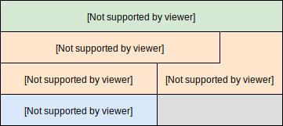
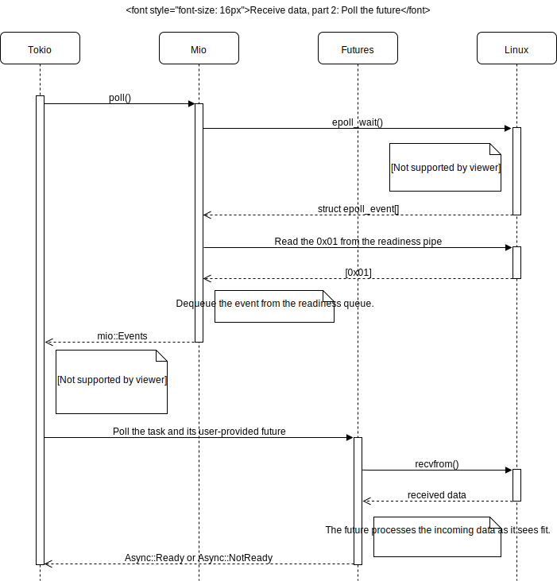
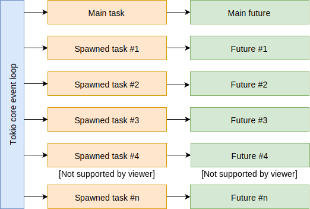

Tokio 内幕：自底向上的理解 Rust 的异步 I/O 框架
tokio 是用于开发异步 I/O 应用程序的 Rust 框架 - 它基于事件驱动的方式，与传统的同步 I/O 相比，它通常可以实现更好的伸缩性，性能与资源使用。不幸的是，tokio 由于其复杂的 (sophisticated) 抽象而难以学习。即使在阅读了教程之后，我仍然觉得自己没有内部化抽象来推理出实际发生的事情。
我以前在异步 I/O 编程方面的经验甚至可能成为我学习 tokio 的阻碍。我习惯于使用操作系统的 selection 工具(如 Linux 的 epoll) 作为起点，然后继续学习调度，状态机等内容。从 tokio 的抽象开始，对底层的 epoll_wait 发生的位置和方式没有清晰的了解，我发现很难将所有的点连接起来。tokio 及其 future 驱动的方式感觉就像个黑匣子。
我没有继续采用自上而下的方式来学习 tokio，而是决定采用自下而上的方式，通过研究源代码来确切地了解当前在Future::poll()中的具体实现如何驱动 epoll 事件向 I/O 消耗的进展。我不会详细介绍 tokio 和 futures 的高级用法，因为有其他的教程对其进行了更深入的说明。除了做一些简短的总结之外，我也不会讨论异步 I/O 的一般问题，因为讨论该主题可能需要写一本书。我的目标仅仅是让人们对 futures 和 tokio 轮询的工作方式有足够的了解。
首先，先做一些重要的免责声明。请注意，tokio 正在积极的开发中，因此此处的某些结论可能很快就会过时。为了这次研究的目的，我使用tokio-core: 0.1.10，futures: 0.1.17以及mio: 0.6.10。因为我想了解 tokio 的最底层，所以我没有考虑使用诸如tokio-proto和tokio-service这种更高层次的 crate。tokio-core 的事件系统拥有很多的组件，为了尽可能简洁，本文将不会对其进行讨论。我是在 Linux 系统中学习 tokio 的，因此一些讨论必然涉及平台相关的实现细节，如：epoll。最后，这里提到的所有内容都是我作为 tokio 新手对其做出的解释，因此可能存在错误或误解。
异步 I/O 简述
同步 I/O 编程涉及执行 同步的 I/O 操作，该操作会一直阻塞线程直到完成。读操作会一直阻塞直到接收到数据，写操作会一直阻塞直到输出的字节发送到内核为止。这种依次执行的操作十分适合传统的命令式编程方式。举个例子，一个 HTTP 服务器为每一个连接都创建了一个线程。在线程中，它需要一直读取字节流直到接收到整个请求(在接收到所有的字节之前线程是阻塞的)，然后处理请求，再将响应写入连接通道(在所有的字节写入之前，线程是阻塞的)。这是一种非常直接的方式。缺点(downside)是由于阻塞，每个连接都需要一个不同的线程，每个线程都有自己的堆栈。在多数情况下这都没有问题，同步 I/O 是一种正确的方式。然而，线程开销阻碍了服务器处理大量连接的伸缩性(参阅：C10k问题)，并且在处理少量连接的低配置系统中也可能过载。
如果我们的 HTTP 服务器是使用异步 I/O 编写的，它可能会在一个线程中处理所有的 I/O 操作。所有的活跃连接以及监听套接字都将被配置成非阻塞的，在事件循环 (event loop) 中监听其读/写的准备情况，并在事件发生时将执行操作分发给处理程序。每个连接需要维护其状态和缓冲区。如果一个处理程序只能读取 200 字节请求的其中100个字节，它将无法等待剩余字节的到达，因为这样做会阻止其他准备处理的连接。它必须将部分读取存储在缓冲区中，将状态设置为“读请求”，然后返回事件循环。下次此连接调用处理程序时，它可以读取请求的剩余部分并切换为“写入响应”的状态。借助复杂的状态机和易于出错的资源管理，实现这样的系统非常麻烦。
一个理想的异步 I/O 框架将提供一种依次编写此类 I/O 处理步骤的方式，就好像它们在阻塞一样，但是在后台会生成事件循环和状态机。在大多数语言中这都是一个艰巨的任务，但是 Tokio 给我们提供了一种更接近这种方式的异步调用。
Tokio 技术栈

Tokio 技术栈包含以下几个组件：
-
System Selector： 每个操作系统都提供了一个接收 I/O 事件的工具，如：epoll (Linux)，kqueue (FreeBSD/Mac OS)以及 IOCP (Windows)。
-
Mio - Metal I/O：Mio 是一个 Rust 库，它通过内部处理每个操作系统的细节来提供一套用于底层 I/O 的通用 API。
-
Futures：Futures 为尚未发生的事件提供了一个强大的抽象。它用一种有效的方式将这些事件组合在一起，以创建可以描述复杂事件序列的组合 Futures。这种抽象足够通用，可以用于 I/O 之外的许多其他的方面，在 Tokio 中，我们将异步 I/O 的状态机作为 futures。
-
Tokio：tokio-core 提供了中央事件循环，该循环与 Mio 集成以响应 I/O 事件，并驱动完成 futures。
-
你的程序：使用 Tokio 框架的程序可以将异步 I/O 系统构造为 futures，并为其提供 Tokio 事件循环以待执行。
Mio：Metal I/O
Mio 提供了一套底层 I/O 的 API，它允许调用者接收诸如读写套接字准备情况变更的事件，以下为其中的重点：
-
Poll 和 Evented：Mio 提供了一个 Evented 特征来表示任何可能成为事件源的东西。在你的事件循环中，你可以通过 mio::Poll 对象来注册大量的
Evented，然后调用 mio::Poll::poll() 进行阻塞直到事件发生在一个或多个Evented对象中(或超过了指定的超时时间)。 -
System Selector：Mio 对 System selector 提供了跨平台的访问方式，因此 Linux 的 epoll，Windows 的 IOCP，FreeBSD/Mac OS 的 kqueue 以及其他选择都可以使用相同的 API。system selector 适配 Mio API 的开销有所不同。因为 Mio 提供了一种类似于 epoll 基于就绪的 API，因此在 Linux 中使用 Mio 时，API 的许多部分可以一对一的进行映射(例如：
mio::Events本质上是一个结构为epoll_event的数组)。相反，由于 Windows 的 IOCP 是基于完成而不是基于就绪，因此需要更多的适配来桥接这两个范式。Mio 提供了自己的std::net结构，如：TcpListener，TcpStream以及UdpSocket。它们封装了std::net，但是默认为非阻塞形式，并提供了Evented实现，这些实现将套接字添加到 System selector 中。 -
非系统事件：除了提供了 I/O 源的就绪状态之外，Mio 还可以指示在用户空间中生成就绪事件。举个例子，如果工作线程完成了一个工作单元，则它可以向事件循环线程发出完成信号。你的程序调用 Registration::new2() 以获取一个(
Registration,SetReadiness)元组。Registration对象是一个Evented，可以在事件循环中向 Mio 注册。当需要指示就绪情况时，可以在SetReadiness对象上调用set_readiness()。在 Linux 中，非系统事件通知是使用管道实现的。当调用SetReadiness::set_readiness()时，0x01字节就被写入管道中。mio::Poll的基础 epoll 配置为监控管道读取的末端，因此epoll_wait()将解除阻塞并且 Mio 可以将事件传递给调用方。实例化轮询时仅创建一个管道，而不管后来注册了多少个(如果有)非系统事件。
每一个Evented的注册都与调用者提供的作为mio::Token的usize类型的值相关联，并且此值与事件一起返回以指示相应的注册。在 Linux 系统中，这可以很好的映射到 System selector 中，因为 token 可以放置在 64 位 epoll_data 联合体中，该联合体以相同的方式起作用。
为了提供 Mio 操作的具体示例，这是当我们使用 Mio 监视 Linux 系统上的 UDP 套接字时在内部发生的事情：
- 创建套接字
#![allow(unused)] fn main() { let socket = mio::net::UdpSocket::bind( &SocketAddr::new( std::net::IpAddr::V4(std::net::Ipv4Addr::new(127,0,0,1)), 2000 ) ).unwrap(); }
这里创建了一个 Linux 中封装在std::net::UdpSocket的 UDP 套接字，这个套接字也封装在mio::net::UdpSocket中。这个套接字被设置为非阻塞的。
- 创建 poll
#![allow(unused)] fn main() { let poll = mio::Poll::new().unwrap(); }
Mio 初始化 System selector，就绪队列(用于非系统事件)和并发保护。就绪队列初始化会创建一个管道，以便可以从用户空间发出准备就绪的信号，并将管道读取的文件描述符添加到epoll中。创建 poll对象时，将从递增计数器中为其分配唯一的selector_id。
- 使用 poll 注册套接字
#![allow(unused)] fn main() { poll.register( &socket, mio::Token(0), mio::Ready::readable(), mio::PollOpt::level() ).unwrap(); }
UdpSocket的Evented.register()函数被调用时，会将代理指向一个被封装的EventedFd，这个EventedFd会将套接字的文件描述符添加到 poll selector 中(最终会调用epoll_ctl(fepd, EPOLL_CTL_ADD, fd, &epoll_event)，并将epoll_event.data设置为提供的token值)。当一个UdpSocket被注册后，它的selector_id会被设置为Poll的selector_id，从而与 selector 产生关联。
- 在事件循环中调用 poll()
#![allow(unused)] fn main() { loop { poll.poll(&mut events, None).unwrap(); for event in &events { handle_event(event); } } }
system selector (epoll_wait())和就绪队列将会轮询是否有新事件(epoll_wait()会阻塞，但是由于非系统事件除了推送到就绪队列之外，还通过管道触发了epoll，因此仍需要及时处理它们。)。这一系列事件的组合可供调用端处理。
Futures 和 任务
Futures 是从函数式编程中借用的技术，因此尚未发生的计算可以表示为一个 “future“，并且这些独立的 future 可以被组合起来以构建一个复杂的系统。这对于异步 I/O 很有用，因为执行事物的基本步骤可以建模成此类组合的 futures。在 HTTP 服务器的示例中，一个 future 可以通过读取字节来读取一个请求，直到到达请求的末端为止，此时将产生请求对象。另一个 future 可能会处理请求并产生响应。再另一个 future 可能会写入响应。
在 Rust 中，futures 库 实现了 futures，你可以通过实现 Future 特征来定义一个 future，它需要实现一个poll() 方法，该方法在需要时会被调用，并允许 future 开始执行。此方法会返回一个错误或表示 future 仍在等待中，因此应稍后再调用poll()，或者当 future 已经完成时将产生一个值。Future 特征还提供了大量的组合器作为默认方法。
想要理解 futures，先要理解三个重要的概念：任务，执行器，通知 - 以及它们是如何在正确的时间调用 futures 的poll()方法的。每一个 future 都会在一个 任务上下文中执行。一个任务直接与一个 future 相关联，但是这个 future 可能是个组合 future，它驱动着很多被包含的 future(举个例子，许多 future 通过join_all() 组合器组合到一个future 中，或者两个 future 通过 and_then() 组合器依次执行)。
任务和他们的 future 需要一个执行器来运行。一个执行器需要在正确的时间轮询任务/ future - 通常是当获得通知可以做一些进展时。当其他一些代码调用实现了 futures::executor::Notify 特征所提供 notify() 方法的对象时，就会产生这样的通知。futures 库中提供的一个及其简单的执行程序就是一个例子，当在 future 上调用 wait() 方法时，该执行程序将被调用。查看源代码)：
#![allow(unused)] fn main() { /// Waits for the internal future to complete, blocking this thread's /// execution until it does. /// /// This function will call `poll_future` in a loop, waiting for the future /// to complete. When a future cannot make progress it will use /// `thread::park` to block the current thread. pub fn wait_future(&mut self) -> Result<F::Item, F::Error> { ThreadNotify::with_current(|notify| { loop { match self.poll_future_notify(notify, 0)? { Async::NotReady => notify.park(), Async::Ready(e) => return Ok(e), } } }) } }
给定一个预先创建的 futures::executor::Spawn 对象来融合任务与 future，这个执行器在循环中调用 poll_future_notify()。Notify对象变成任务上下文的一部分，future 也在被轮询。如果一个 future 的poll()返回Async::NotReady表明 future 仍在等待中，需要在 future 中再次安排轮询。Notify对象可以通过 futures::task::current() 获取一个任务的句柄，并在 future 有进展后调用 notify() 方法(当一个 future 正在被轮询时，与其关联的任务信息被存储在 thread-local 中，可以通过current()访问到)。在上述示例中，如果轮询返回了Async::NotReady，执行器将会一直阻塞直到接收到通知。也许 future 会在另一个线程中开始一些工作，并在完成时调用notify()，也许poll()在返回Async::NotReady之前直接自己调用notify()(后者不是很常见，因为从理论上来说，poll()应该在返回之前继续取得进展)。
Tokio 事件循环更像是一种复杂的 (sophisticated) 执行器，与Mio 事件集成以驱动 future 完成。在这种情况下，指示套接字准备就绪的 Mio 事件将发送一个通知使得对应的 future 进行轮询。
处理 future 时，任务是最基础的执行单元，且基本上就是提供了某种多任务协作的绿色线程，允许一个操作系统线程中有多个执行上下文。如果一个任务无法取得进展，会让处理器处理其他可执行的任务。理解通知发生在任务级别而非 future 级别是十分中重要的。当一个任务接收到通知，它将会轮询它的顶级 future，可能会导致其中某些或全部的子 future 都被轮询。举个例子，如果一个任务的顶级 future 是由其他 10 个 future join_all()的，其中一个 future 安排的任务被通知到，全部的 10 个任务都将被轮询。
Tokio 与 Mio 的接口
Tokio 通过上面描述的 Mio “非系统事件”的特性将任务通知转换成为 Mio 的事件。当任务获取到 Mio 的(Registration, SetReadiness) 元组后，它使用 Mio 的轮询将Registration(它是一个Evented)进行注册，并在MySetReadiness中封装实现了Notify特征的mio::SetReadiness对象，查看源码：
#![allow(unused)] fn main() { struct MySetReadiness(mio::SetReadiness); impl Notify for MySetReadiness { fn notify(&self, _id: usize) { self.0.set_readiness(mio::Ready::readable()) .expect("failed to set readiness"); } } }
在这种方式中，任务通知被转换成为 Mio 事件，且可以在 Tokio 事件处理与分派机制中与其他类型的 Mio 事件一起进行处理。
就像 Mio 封装了std::net结构(如：UdpSocket，TcpListener，TcpStream)以自定义功能一样，Tokio 也使用组合和装饰来提供这些类型的 Tokio的 感知版本。例如：Tokio 的UdpSocket看起来像这样：

Tokio 版本的这些 I/O 源类型提供的构造函数都需要一个指向事件循环的句柄(tokio_core::reactor::Handle)。在初始化的时候，这些类型将会将它们的套接字注册到事件循环的 Mio 轮询中，以接收edge-triggered(一种 epoll 事件的触发方式)事件及其新分配的偶数数字的 token(下面会提及)。当底层 I/O 操作回传WouldBlock时，这些类型可以很方便地通知当前的任务来接收读/写就绪状态。
Tokio 在 Mio 上注册了很多 Evented 的类型，键入特定的 token：
-
Token 0 (
TOKEN_MESSAGES) 被用于 tokio 内部的消息队列，它提供了移除 I/O 来源，接收读写就绪通知的定时任务，配置超时时间，在事件循环的上下文中运行任意(arbitrary)闭包。这可以安全地与其他线程的事件循环进行通信。举个例子：Remote::spawn() 通过消息系统将 future 传入事件循环中。消息系统被实现为 futures::sync::mpsc 流。作为一个 futures::stream::Stream (与 future 很像，但是它产生一系列的值而不是单个值)，使用上面提到的
MySetReadiness方案执行此消息队列的处理，其中Registration是以TOKEN_MESSAGES令牌进行注册的。当接收到TOKEN_MESSAGES事件，他们会被分发给consume_queue()方法来进行处理(源码：enum Message，consume_queue())。 -
Token 1 (
TOKEN_FUTURE) 被用来通知主任务需要被轮询。这发生在主任务关联的通知被发布的时候(换句话说就是 future 或者其中的子 future 被传递给Core::run()，而不是通过spawn()运行在不同任务上的 future)。它同样使用一个MySetReadiness方案将 future 的通知转换成了 Mio 的事件。在一个 future 运行在主任务之前返回Async::NotReady，并以其所选的方式在稍后发布通知。当接收到TOKEN_FUTURE事件后，Tokio 事件循环将会重新轮询主任务。 -
大于 1 的偶数 Token (TOKEN_START + key * 2) 被用来表明 I/O 来源上的就绪状态的变更。key 是指与
Core::inner::io_dispatch Slab<ScheduledIo>相关联的Slabkey。当对应的 Tokio 源类型初始化时，Mio I/O 源类型(UdpSocket，TcpListener，TcpStream)使用此 token 自动进行注册。 -
大于 1 的奇数 Token (TOKEN_START + key * 2 + 1) 被用来表明一个已创建的任务(以及相关的 future)需要被轮询。key 是与
Core::inner::task_dispatch Slab<ScheduledTask>相关联的Slabkey。和TOKEN_MESSAGES与TOKEN_FUTURE事件相同，这里也使用了MySetReadiness方案。
Tokio 事件循环
Tokio，尤其是tokio_core::reactor::Core，提供了一个管理 future 和任务的事件循环，来驱动 future 的完成，它同样还提供了与 Mio 的接口，因此 I/O 事件将会导致正确的任务被通知到。使用事件循环设置使用 Core::new() 初始化 Core 以及 使用单个 future 调用Core::run()。事件循环将会在返回之前驱动提供的 future 完成。对于服务端应用，这个 future 更像是长期存活。它确实可能是这样，举个例子：使用一个TcpListener来一直接收新的连接，每个连接都会被自己的 future 进行处理，这些 future 运行在由Handle.spawn()创建的独立任务中。
下面的流程图概述了 Tokio 事件循环的基本步骤：

当数据抵达套接字时发生了什么？
了解 Tokio 的一个有用的练习是检查当数据到达套接字时在事件循环中发生的步骤。我惊讶的发现这个过程最终分为两个部分，分别在事件循环内的各自迭代中，进行独立的 epoll 事务。第一部分负责当套接字读就绪(即 Mio 事件带着比 1 大的偶数 token 或者主任务的TOKEN_FUTURE)时，通过发送通知给对套接字感兴趣的任务。第二部分通过轮询任务及与其关联的 future 来处理通知(即 Mio 事件带着比 1 大的奇数 token)。我们来考虑以下情景：一个创建的 future 通过上层的 Tokio 事件循环 从 Linux 系统中的UdpSocket上读取数据，假设之前对 future 的轮询导致recv_from()返回了一个WouldBlock错误。

Tokio 事件轮询调用mio::Poll::poll()，该方法转而(在 Linux上 )调用epoll_wait()，进而阻塞某个监控中的文件修饰符发生了就绪状态变更的事件。当这些发生时，epoll_wait()返回一个epoll_event结构的数组，用来描述发生了什么事，这些结构通过 Mio 转换成mio::Events并返回给 Tokio(在 Linux 中，这个转换是零开销的，因为mio::Events只是epoll_event数组的一个元组结构)。在我们的例子中，假定数组中只有一个事件表明套接字已经读就绪。因为事件的 token 是大于 1 的偶数，因此 Tokio 将其解释为一个 I/O 事件，并在Slab<ScheduledIo>的相关元素中查找详细信息，该元素包含有关对这个套接字的读写就绪感兴趣的任务信息。然后，Tokio 通知读任务通过MySetReadiness调用 Mio 的set_readiness()。Mio 通过将事件详细信息添加到就绪队列，并将单个 0x01 字节写入就绪管道来处理这个非系统事件。

在 Tokio 的事件轮询来到下一个迭代后，它再一次轮询 Mio，Mio 则调用epoll_wait()，这时，该函数将会返回一个发生在 Mio 就绪管道上的读就绪事件。Mio 读取之前写入管道的 0x01 字节，并从就绪队列中取出最先的非系统事件的详细信息，并将该事件返回给 Tokio。因为事件的 Token 是大于 1 的奇数，Tokio 将其解释为任务通知事件，并在Slab<ScheduledIo>的相关元素中查找详细信息，该元素包含从spawn()返回的任务最初的Spawn对象。Tokio 通过 poll_future_notify() 轮询任务及其相关的 future。future 可能会在之后读取套接字上的数据知道它收到一个WouldBlock错误。
与其他异步 I/O 事件相比，这两种设计管道读写的迭代方式可能会增加一点开销。在单线程程序中，使用strace查看线程通过管道和它自己交流是很奇怪的：
pipe2([4, 5], O_NONBLOCK|O_CLOEXEC) = 0
...
epoll_wait(3, [{EPOLLIN|EPOLLOUT, {u32=14, u64=14}}], 1024, -1) = 1
write(5, "\1", 1) = 1
epoll_wait(3, [{EPOLLIN, {u32=4294967295, u64=18446744073709551615}}], 1024, 0) = 1
read(4, "\1", 128) = 1
read(4, 0x7ffce1140f58, 128) = -1 EAGAIN (Resource temporarily unavailable)
recvfrom(12, "hello\n", 1024, 0, {sa_family=AF_INET, sin_port=htons(43106), sin_addr=inet_addr("127.0.0.1")}, [16]) = 6
recvfrom(12, 0x7f576621c800, 1024, 0, 0x7ffce1140070, 0x7ffce114011c) = -1 EAGAIN (Resource temporarily unavailable)
epoll_wait(3, [], 1024, 0) = 0
epoll_wait(3, 0x7f5765b24000, 1024, -1) = -1 EINTR (Interrupted system call)
Mio 使用这种管道的方式来支持可能从其他线程调用set_readiness()的一般情况，也许在强制事件的公平调度以及维护 future 与 I/O 之间的间接层方面也会有一些好处。
收获：组合 future 和 衍生 future
当我第一次学习 Tokio 时，我写了一个小程序监听来自不同 UDP 套接字上的数据。我创建了 10 个 读取套接字的 future 实例，它们每一个都监听不同的端口。我天真的使用join_all() 将它们组合成一个 future，并将其传入Core::run()，然后惊讶的发现当单个数据包抵达时，每个 future 都在被轮询。同样让人惊讶的是tokio_core::net::UdpSocket::recv_from()已足够聪明，在先前的 Mio 轮询中，可以避免在未标记已就绪的套接字上实际调用操作系统的recv_from()。以下的strace反应出在 future 的poll()中的调试println!()，大致如下：
epoll_wait(3, [{EPOLLIN|EPOLLOUT, {u32=14, u64=14}}], 1024, -1) = 1
write(5, "\1", 1) = 1
epoll_wait(3, [{EPOLLIN, {u32=4294967295, u64=18446744073709551615}}], 1024, 0) = 1
read(4, "\1", 128) = 1
read(4, 0x7ffc183129d8, 128) = -1 EAGAIN (Resource temporarily unavailable)
write(1, "UdpServer::poll()...\n", 21) = 21
write(1, "UdpServer::poll()...\n", 21) = 21
write(1, "UdpServer::poll()...\n", 21) = 21
write(1, "UdpServer::poll()...\n", 21) = 21
write(1, "UdpServer::poll()...\n", 21) = 21
write(1, "UdpServer::poll()...\n", 21) = 21
write(1, "UdpServer::poll()...\n", 21) = 21
recvfrom(12, "hello\n", 1024, 0, {sa_family=AF_INET, sin_port=htons(43106), sin_addr=inet_addr("127.0.0.1")}, [16]) = 6
getsockname(12, {sa_family=AF_INET, sin_port=htons(2006), sin_addr=inet_addr("127.0.0.1")}, [16]) = 0
write(1, "recv 6 bytes from 127.0.0.1:43106 at 127.0.0.1:2006\n", 52) = 52
recvfrom(12, 0x7f2a11c1c400, 1024, 0, 0x7ffc18312ba0, 0x7ffc18312c4c) = -1 EAGAIN (Resource temporarily unavailable)
write(1, "UdpServer::poll()...\n", 21) = 21
write(1, "UdpServer::poll()...\n", 21) = 21
write(1, "UdpServer::poll()...\n", 21) = 21
epoll_wait(3, [], 1024, 0) = 0
epoll_wait(3, 0x7f2a11c36000, 1024, -1) = ...
因为 Tokio 和 futures 的内部机制对我来说有些模糊 (opaque)，我想我希望后台发生一些魔法规则只会轮询需要的 future。当然，在对 Tokio 有了更好的了解之后，很明显我的程序正在使用这样的 future。

这实际上可以正常工作，但不是最佳选择 - 特别是在你有很多套接字的情况下。因为通知是在任务级别发生的，因此在上面任何绿色框中排列的任何通知都将导致通知主要任务。它将轮询它的 FromAll future，使得所有的子 future 都将接受轮询。我真正需要的是一个主 future，它可以使用Handle::spawn()来启动封装在各自任务中的 future，这样的安排大致如下所示：

当任何 future 安排通知时，只有 future 特定的任务会被通知到，并且只有该 future 会被轮询(回想一下，当tokio_core::net::UdpSocket::recv_from()从它的底层mio::net::UdpSocket::recv_from()调用中接收到WouldBlock时，“安排通知”会自动发生)。future 的组合器是用来描述协议流的强大工具，否则将在手动状态机中实现该协议流，但是了解你的设计可能需要在何处支持独立且并行执行的任务，这一点很重要。
最后的思考
学习 Tokio的源码，Mio 以及 futures 确实有助于巩固我对 Tokio 的理解，并通过理解具体的实现来验证我的抽象策略。这种方法在仅学习抽象层的狭隘使用案例时非常危险，我们必须意识到具体的示例仅是助于理解的一般用例，在阅读了源码之后再学习 Tokio 的教程，我有一些马后炮的意见：Tokio 非常合理，应该很容易理解与上手。
我仍有一些问题待日后研究：
-
Tokio 是否能够处理边缘触发的饥饿问题？我想将来可以通过限制单个
poll()中的读写次数来处理它。当达到极限时， future 可以在明确通知当前任务后提前返回，而不是依赖于 Tokio 的 I/O 源类型的隐式“定时WouldBlock”的行为，从而使其他任务及 future 有机会取得进展。 -
Tokio 是否支持以任何方式在多线程中运行事件循环，而不是依靠寻找机会将工作分担给工作线程以最大程度地利用处理器内核。
2017-12-19 更新：这里有 Reddit thread on r/rust 在讨论本文。Mio 的作者 Carl Lerche 在这里和这里 贴了些信息量很大的留言。除了回应上述问题，他也指出 FuturesUnordered 提供了一种组合 future 的方式，以便对相关的子 future 进行轮询，从而避免了像join_all()那样对每个 future 进行轮询，且需要权衡其他分配。同样，Tokio 的未来版本将从mio::Registration方案迁移到通知任务，这可以简化前面描述的某些步骤。
2017-12-21更新：看起来 Hacker News 也在讨论这篇文章。
2018-01-26更新：我为 Tokio 的示例代码创建了一个Github仓库。